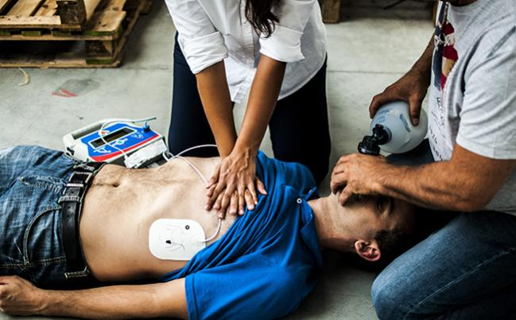
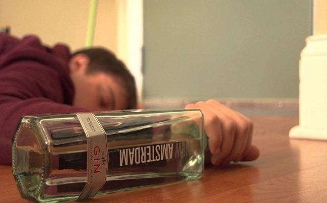
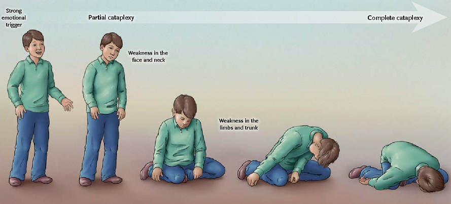
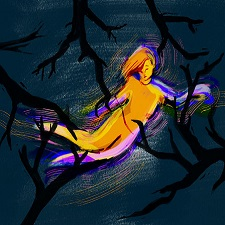

SYN
COPE
2018 ESC Guidelines for the diagnosis and management of syncope
Transient Loss of Consciousness (T-LOC)
-
TRANSIENT
short duration; <5mins -
UNRESPONSIVE
no response to speech/touch/pain. required witness. -
UNAWARE
loss of memory. -
UNCONTROLLED
fall, abnormal movement.

Cardiac Arrest is not T-LOC.
not transient
not spontaneously recovered
not transient
not spontaneously recovered

Drunken or Alcohol
Intoxication is not T-LOC.
not transient
not totally unconscious
Intoxication is not T-LOC.
not transient
not totally unconscious

Cataplexy is not T-LOC.
unresposive and uncontrolled
but fully aware
unresposive and uncontrolled
but fully aware
Causes of T-LOC
 Syncope
SyncopeTLOC due to cerebral hypoperfusion
Epileptic Seizures

Psychogenic
psychogenic pseudosyncope or psychogenic non-epileptic seizures
psychogenic pseudosyncope or psychogenic non-epileptic seizures
 Head Trauma
Head Trauma
Pathophysiological Basis of Syncope
Cardiac Syncope
Reflex Syncope
Orthostatic Hypotension